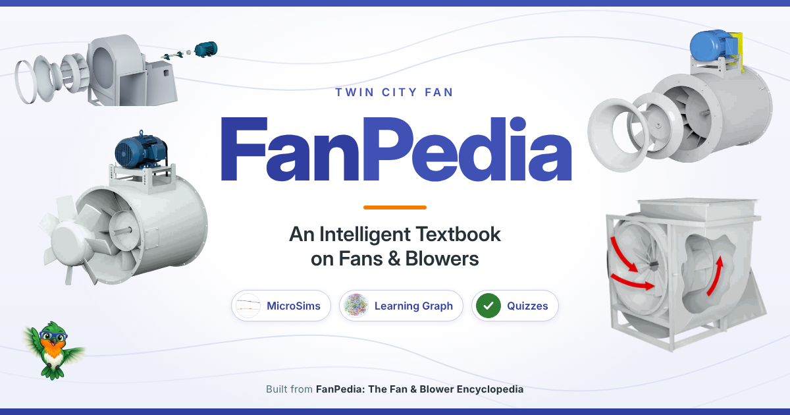

FanPedia: An Intelligent Textbook on Fans & Blowers¶

Welcome to FanPedia: An Intelligent Textbook on Fans & Blowers, an interactive course on industrial and commercial fans built from Twin City Fan's FanPedia: The Fan & Blower Encyclopedia and current Twin City Fan catalogs.
A single fan order has to state the fan type, arrangement, impeller, rotation and discharge, motor position, construction class and accessories, and getting any one of them wrong means a fan that does not fit, perform or install. This book teaches that vocabulary and the engineering behind it. It is written for new application engineers, sales staff, representatives and distributors, specifying engineers, and plant and facilities staff. You need only high-school algebra and familiar units such as feet, horsepower and RPM; no fan or HVAC background is assumed.
Start with Chapter 1 Browse the chapters
Choose Your Path¶
You do not have to read all 27 chapters to do your job well. Each learning path lists the chapters to read, the sections to skim and the ones you can skip, with the MicroSims and quizzes that matter for your role:
- Inside Sales and Customer Service: order entry, quoting, model codes and catalogs
- Outside Sales and Manufacturer's Representatives: product families, applications and matching a job to a product line
- Specifying, Consulting and Application Engineers: performance, fan laws, system effect, sound, construction and specifications
- Plant and Facilities Staff: identifying installed fans, their parts and their support hardware
What You Will Learn¶
Across 27 chapters you will learn to:
- recognize the fan families and product lines, and name every major part of a fan from an exploded view
- tell the impeller types apart and know where each one fits
- read and write arrangements, rotation and discharge codes, and motor positions
- choose motors, bearings, inlets, dampers, special construction and isolation for an application
- read fan curves and catalog performance tables, and apply the fan laws and density corrections
- select a fan and write a complete specification, ending with a capstone project
How the Book Works¶
- Chapters in prerequisite order. The book covers 581 concepts, and each is introduced only after the concepts it depends on. Read the chapters in order.
- MicroSims. Calculators, curve explorers, sorters and code builders run right in the page, so you can change a speed or a discharge position and see the result instead of reading about it.
- Interactive diagrams. Twenty MicroSims are overlays on FanPedia drawings: explore the labeled parts of a fan, then quiz yourself on them.
- Quizzes and references. Every chapter ends with a quiz whose answers explain the reasoning and link back to the section that teaches it, and with a list of references for further reading.
- Glossary and FAQ. Look up any term in the glossary, or check the FAQ for the questions new learners ask most.
- Catalogs come first. Where a current Twin City Fan catalog and FanPedia differ, the catalog governs. Example numbers that do not come from a catalog are labeled illustrative.
Quick Links¶
| Chapter 1: Air, Pressure and the Fan | Where the book begins: airflow, pressure, speed, power and air density |
| List of Chapters | All 27 chapters with a one-line summary of each |
| MicroSims Gallery | Every interactive simulation and diagram in one place |
| Glossary | Definitions for all 581 concepts in the book |
| FAQ | 98 frequently asked questions and answers |
| Learning Graph | An interactive map of how the concepts depend on each other |
| About This Book | Audience, sources, how to use the book and how to cite it |